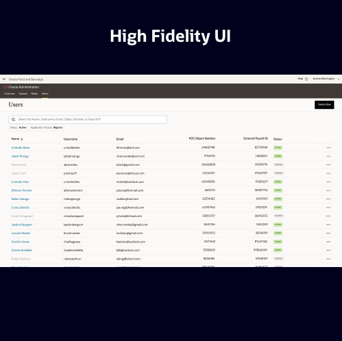
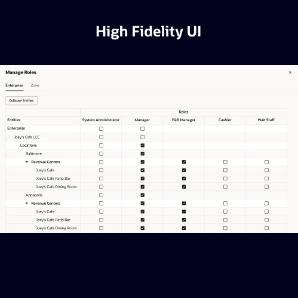
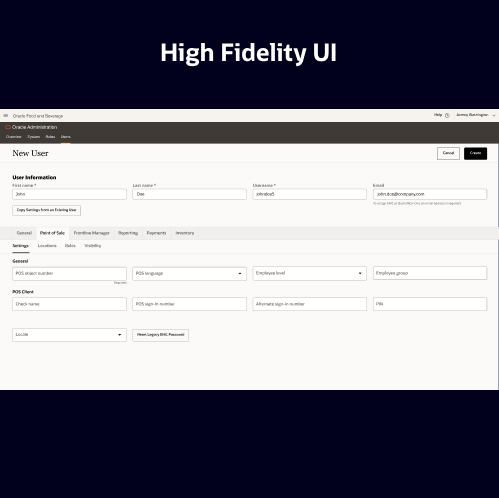

<div class="load-data">
    <div class="popup-main-content">
        <div class="container">
            <div class="row">
                <div class="col-md-12">
                    <div class="portfolio-details-title">
                        <h2>User Management - administration</h2>
                    </div>
                    <!-- /portfolio-details-title -->
                </div>
                <!-- <div class="col-md-12">
                    <div class="media mb-40">
                        <iframe src="https://www.youtube.com/embed/ywoo1cddesY"></iframe>
                    </div>
                </div> -->
                <div class="col-lg-6">
                    <div class="portfolio-details-info">
                        <div class="tags"><span>Client : </span> Oracle Product</div>
                        <div class="tags"><span>Category : </span> Enterprise UX</div>
                        <div class="tags"><span>Date : </span> 05/May/2022</div> 
                        <div class="tags"><span>Product : </span> Administration</div>
                    </div>
                    <!-- /portfolio-info -->
                </div>
                <div class="col-lg-6 mt-40 mt-lg-0">
                    <p class="portfolio-description lh-fix"> The user Management product was built to manage users and employees in the cloud in order to make a single workflow and a single place in the cloud. In this, we tried to integrate R&A and EMC Gen 2.</p>
                    <p class="portfolio-description mt-30">As a part of this design process, I analyzed how the legacy UI of both EMC and R&N tools worked independently and understood the complete module by understanding the user goals and Shape of the data.</p>
                    <!-- /portfolio-description -->
                </div>
                <p class="portfolio-description mt-30"> We worked on a framework to integrate the tools into a single platform Further worked on the low-fidelity wireframes and built a flow. After that updated the flow based on the feedback received from the product owners. And finally built the high-fidelity flow.</p>
                <a href="https://kc60488charan.medium.com/user-management-7b0572748960" class="g-link slide-vertical mt-30" data-splitting>View Detailed Case Study</a>
                <div class="col-lg-12">
                    <div class="portfolio-details-media">
                        <div class="row">
                            <div class="col-lg-4 col-md-6">
                                
                            </div>
                            <div class="col-lg-4 col-md-6">
                                
                            </div>
                            <div class="col-lg-4 col-md-6">
                                
                            </div>
                        </div>
                    </div>
                    <!-- /portfolio-details-media -->
                </div>
                <div class="col-md-12">
                    <div class="divider"></div>
                    <!-- /divider -->
                            </div>
                <div class="col-md-12">
                    <div class="portfolio-details-nav d-flex justify-content-between">
                        <div>
                            <a class="portfolio-link" href="portfolio-details-01.html">Previous Project</a>
                        </div>
                        <div>
                            <a class="portfolio-link" href="portfolio-details-04.html">Next Project</a>
                        </div>
                    </div>
                    <!-- /portfolio-details-nav -->
                </div>
            </div>
        </div>
    </div>
</div>